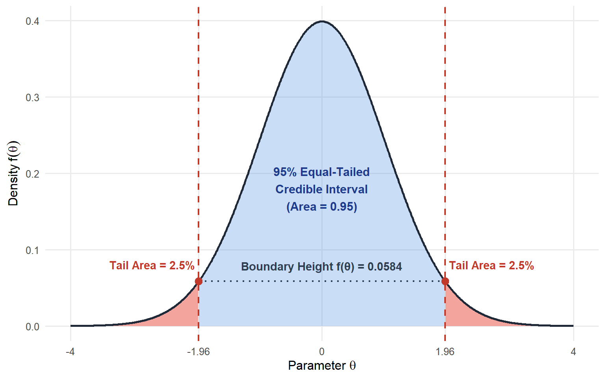

hill method hill:method
Min. :0.002607 Min. :0.1562 Min. :0.0008354
1st Qu.:0.046870 1st Qu.:0.3373 1st Qu.:0.0389423
Median :0.075701 Median :0.3778 Median :0.0622155
Mean :0.079094 Mean :0.3787 Mean :0.0667844
3rd Qu.:0.106745 3rd Qu.:0.4180 3rd Qu.:0.0861615
Max. :0.227055 Max. :0.5370 Max. :0.2529261 Exam 2 Review
Mark Himmelstein
Brief Update 1
The exam will take place in JS Coon 247/248 instead of 250
- This is where you do lab
- Should be more comfortable/spacious!
Review Question 1
For the review, would it be possible to go over Equal Tailed Credible intervals and how they differ from Confidence Intervals and HDIs? I think the differences in interpretations are throwing me off a little. Thank you!
Credible Intervals
Any type of credible interval represents some proportion of the posterior distribution.
- For example, a 95% credible interval represents 95% of the posterior distribution
- An 80% credible interval represents 80% of the posterior distribution
But it doesn’t say WHICH 95% or 80%. Equal tailed and highest posterior density are two methods for choosing the
Equal Tailed Credible Interval
An equal tailed credible interval is most similar to the version of a confidence interval we have seen in that it is symmetrical by definition.
- If we call \(c\) the proportion of the credible interval (e.g. \(c = .95\) for a 95% credible interval):
- *exactly** \(\frac{1 - c}{2}\) of the area of the distribution goes in the upper tail
- *exactly** \(\frac{1 - c}{2}\) of the area of the distribution goes in the lower tail
The next two slides show the equal tailed interval for a
- symmetric posterior
- asymmetric posterior
Symmetric ETI

Asymmetric ETI

Differences
What differences do you notice?
Highest Posterior Density
For the HPD intervals, we use a different method to choose the boundary:
- Find the value such that the height of the boundary is always equal
- Regardless of whether distribution is symmetric
- Means we might have less total area in one tail than the other
- But There are no values outside the credible interval more likely than any values inside the credible interval
- For symmetric posteriors, ETI and HPD will be equivalent
- For asymmetric posteriors, they will not
Symmetric HPD
Asymmetric HPD

Overview
- Even for asymmetric posteriors both versions represent a range of values we are 95% sure the parameter falls into
- But they represent a different 95% range!
- There is no objectively right one to choose
- If you want to exclude equal areas in both tails, use ETI
- If you want the range of values that are more likely than the 5% of values outside the 95% CI, use the HPD
Review Question 2
To add to exam questions, can we do a crash course on Bayes in regard to how it differs from ANOVA tests and t-tests?
Frequentist vs. Bayesian
The most important difference between frequentist and Bayesian statistics is philosophical:
- How do we infer what an unknown parameter is from messy data
- Parameters: Numerical values that define probability distribution
- Data: Outcome of probability distribution
- Statistical Theory: Parameters generate data
- We try to reverse engineer the parameters from the data
Examples of Parameters
- Bernoulli distribution: \(\pi\) (probability, not 3.14)
- Statistical estimate: observe binary outcomes and counting the proportion of successes
- Normal distribution: \(\mu, \sigma\)
- Statistical estimate: Observe a sample of some continuous distribution, calculate mean and SD
- General linear model: \(\beta_0 \dots \beta_p, \sigma_{\epsilon}\)
- Estimate relationship between predictors \(x\)’s and outcome \(y\) using a computational algorithm
- Ordinary least squares, maximum likelihood, Markov Chain Monte Carlo
- Estimate relationship between predictors \(x\)’s and outcome \(y\) using a computational algorithm
Philosophical Differences
Frequentist
- State null hypothesis
- Collect data
- Obtain statistical estimate of parameters
- Calculate how unlikely that statistical estimate would be if null hypothesis were true
- Parameter estimate is single value estimated by ordinary least squares, maximum likelihood, etc
- Uncertainty quantified with confidence intervals
- Focus on tests, which can be represented as general linear models
Bayesian
- State prior belief as probability distribution about parameter(s)
- Collect data
- Use Bayes’ rule to calculate posterior belief as new probability distribution about parameters given data
- Parameter estimate represents range of possible values and how likely those values are relative to others calculated by Markov Chain Monte Carlo
- Uncertainty quantified with credible intervals
- Focus on general linear models, which can be compared with Bayes factors
More Differences
Frequentist
- OLS and maximum likelihood are relatively simple computationally
- However, they can be rigid/inflexible
- If you need a model that isn’t “out-of-the-box” it can be very hard to figure out how to program unless you are computer scientist
- Limited to \(t\)-tests, ANOVA, regression, and generalizations like logistic regression, Poisson regression, beta regression, etc.
Bayesian
- MCMC is more complex/slow computationally
- However, very flexible
- If you learn Bayesian software more in depth, requires much less computational expertise to start working with fancy/bespoke models
- Almost any data generating process you can imagine can be turned into a model that you can estimate
- Main constraints are identifiability and tractability of posterior geometry
Stuff on this slide is beyond our class. Any type of analysis we cover in this class can be done using either frequentist or Bayesian methods, differences are preferred philosophy and computational method
Review Question 3
Hi, I am a little bit confused with a priori comparison from the Lecture 17. Would it be possible to go through it in terms of how the procedure is different from an independent t-test? Thank you!
Post-hoc vs A Priori
In one-way ANOVA, we are comparing the means of more than two groups to one another.
- We first do an omnibus \(F\)-test to test for any differences among means
- Then we do follow-up tests to see where those differences are
- Post-hoc: We do not have any existing theory about where differences should be
- Usually means we compare all pairs of groups to one another
- A priori: We do have some theory about where the differences should be
- Usually means we plan what comparisons we are going to do in advance
- May involve contrasts that are linear combinations of multiple groups (not just pairs)
- Post-hoc: We do not have any existing theory about where differences should be
Follow-up vs Simple \(t\)
How are follow-up tests in ANOVA (whether post-hoc or a priori) different from just doing regular independent sample \(t\)-tests for each pair?
Both have the form: \(t(df) = \frac{\bar{x_1} - \bar{x_2}}{s_{x_1 - x_2}}\). How do they differ?
Why MSW?
Post-hoc
- Because post-hoc tests compare all groups, we need to control the family-wise error rate (FWE)
- Probability we reject at least one true null is larger than \(\alpha\) because each individual test has a 5% chance of rejecting a true null
- Probability compounds for each extra test we do
- If tests are independent, FWE = \(1 - (1 - \alpha)^k\) for \(k\) tests
- Post-hoc tests reuse the same groups, so tests are not independent
- E.g. group 1 vs 2 is not independent of Group 1 vs 3 or group 2 vs 3
- Tukey’s HSD and Games-Howell account for non-independence in FWE
A Priori
- For A Priori tests, we don’t compare all groups, just a specific set of groups that we think are of theoretical interest
- Reduces the total number of tests, which in turn reduces inflation in FWE
- Can also do planned contrasts
Contrast 1:
\[\psi_1 = \quad 1\mu_1 + -\frac{1}{2}\mu_2 + -\frac{1}{2}\mu_3= 0\]
Compares group 1 to average of groups 2 and 3
Contrast 2:
\[\psi_2 = \quad 0\mu_1 + 1\mu_2 + -1\mu_3 = 0\]
Compares group 2 to 3
Standard Error?
I glossed over this initially, but we would still use MSW to define the standard error for this type of linear contrast:
\[t(df) = \frac{\psi}{s_\psi}\] Where:
\[s_\psi = \sqrt{MSW\sum_{i=1}^G\frac{c_i^2}{n_i}}\]
Same logic as for pairwise test except we weight each group by its \(c_i\)
\[s_{x_1 - x_2} = \sqrt{\frac{MSW}{n_1} + \frac{MSW}{n_2}}\]
Review Question 4
For Bayes’ rule, I’m confused about what conceptually makes the likelihood and the scaling term different.
For the cue ball example (Lecture 14 slide 19), they’re explained as “All possible ways the 9-ball could wind up to the right of the cue ball” and “Divided by the sum of all possible ways the 9-ball could be to the right of the cue ball.” What does this mean?
Likelihood vs Scaling
This is a good catch about my wording being confusing.
- The likelihood represents each individual way the 9-ball could be to the right of the cue ball separately
- The scaling term represents the weighted sum of all ways the 9-ball could be to the right of the cue ball (where the weights are our prior belief for the individual ways)
Two Forms
Traditionally we write Bayes’ rule as:
\[P(A|B) = \frac{P(B|A)P(A)}{P(B)}\]
But we can also say that:
\(P(B) = \sum_{i=1}^N P(B|A_i)P(A_i)\)
where \(N\) is some finite number of different values \(A\) can take on. That means we can instead write Bayes’ rule as
\[P(A|B) = \frac{P(B|A)P(A)}{\sum_{i=1}^N P(B|A_i)P(A_i)}\]
Scaling
This means that if we sum up all the posterior probabilities \(P(A_i | B)\) for every possible value of \(A\), it is guaranteed to sum to 1
\[\sum_{j=1}^N P(A_j|B) = \sum_{j=1}^N\frac{P(B|A_j)P(A_j)}{\sum_{i=1}^N P(B|A_i)P(A_i)} = 1\]
The problem is that when we work with a continuous parameter space \(\boldsymbol{\theta}\), we can’t count \(N\) different possible values \(\boldsymbol{\theta}\), so we need to integrate instead
\[\int P(\boldsymbol{\theta}|\boldsymbol{D})d\boldsymbol{\theta} = \int \frac{P(\boldsymbol{D}|\boldsymbol{\theta})P(\boldsymbol{\theta})}{\int P(\boldsymbol{D}|\boldsymbol{\theta})P(\boldsymbol{\theta})d\boldsymbol{\theta}}d\boldsymbol{\theta} = 1\]
That’s where MCMC comes in, it helps us solve the integral \(\int P(\boldsymbol{D}|\boldsymbol{\theta})P(\boldsymbol{\theta})d\boldsymbol{\theta}\) via simulation when it can’t be solved analytically
Bayes and Effect Size
Because Bayesian estimates aren’t deterministic the way the simple frequentist ANOVA algorithm is, the traditional \(R^2\) is not guaranteed to be \(0 \leq R^2 \leq 1\)
- Means it is possible for the model to explain more than the total variance
- Not a sensible interpretation!
Alternative:
\[\text{Bayesian } R^2 = \frac{s_{\hat{y}}^2}{s_{\hat{y}}^2 + s_{\epsilon}^2}\]
- Is guaranteed to be \(0 \leq \text{Bayesian } R^2 \leq 1\)
- Same interpretation as \(\eta^2\) and \(R^2\)
Bayesian \(\eta^2\)
In factorial ANOVA, this corresponds to a global effect size for how much of the total variance is explainable by all factors
To get an \(\eta^2\) equivalent for each factor and the interaction separately, we can use eta_squared_posterior() from effectsize. Here is how to use it for the wine rating data (you can get either partial or full by specifying)
Bayesian \(d\)
To get \(d\) for pairwise comparisons (perhaps for simple main effects), you need to decide what SD to divide by. Options
- Posterior mean of \(\sigma\)
- Full posterior distribution of \(\sigma\)
The former is simpler. All we do is take the posterior mean of sigma from the summary output and divided everything by that
Finding \(\sigma\)
Model Info:
function: stan_glm
family: gaussian [identity]
formula: rating ~ hill * method
algorithm: sampling
sample: 4000 (posterior sample size)
priors: see help('prior_summary')
observations: 300
predictors: 6
Estimates:
mean sd 10% 50% 90%
(Intercept) 85.4 0.5 84.7 85.4 86.1
hillwest -3.6 0.7 -4.5 -3.6 -2.6
methoda 5.7 0.7 4.7 5.7 6.6
methodb 4.1 0.7 3.2 4.1 5.1
hillwest:methoda 0.5 1.1 -0.9 0.5 1.8
hillwest:methodb 4.0 1.1 2.6 4.0 5.4
sigma 3.7 0.2 3.5 3.7 3.9
Fit Diagnostics:
mean sd 10% 50% 90%
mean_PPD 87.6 0.3 87.3 87.6 88.0
The mean_ppd is the sample average posterior predictive distribution of the outcome variable (for details see help('summary.stanreg')).
MCMC diagnostics
mcse Rhat n_eff
(Intercept) 0.0 1.0 1849
hillwest 0.0 1.0 1742
methoda 0.0 1.0 1916
methodb 0.0 1.0 1802
hillwest:methoda 0.0 1.0 1792
hillwest:methodb 0.0 1.0 1745
sigma 0.0 1.0 3558
mean_PPD 0.0 1.0 3982
log-posterior 0.0 1.0 1437
For each parameter, mcse is Monte Carlo standard error, n_eff is a crude measure of effective sample size, and Rhat is the potential scale reduction factor on split chains (at convergence Rhat=1).Simple Main Pairs
method = control:
contrast estimate lower.HPD upper.HPD
east - west 3.585 2.15 5.02
method = a:
contrast estimate lower.HPD upper.HPD
east - west 3.139 1.72 4.57
method = b:
contrast estimate lower.HPD upper.HPD
east - west -0.455 -1.90 1.00
Point estimate displayed: median
HPD interval probability: 0.95 \(d\) for pairs
To transform from the original units to \(d\) (\(Z\)-score units), we just divide by \(\sigma\)
posterior mean and 95% HPD between east - west for control
posterior mean and 95% HPD between east - west for a
posterior mean and 95% HPD between east - west for a